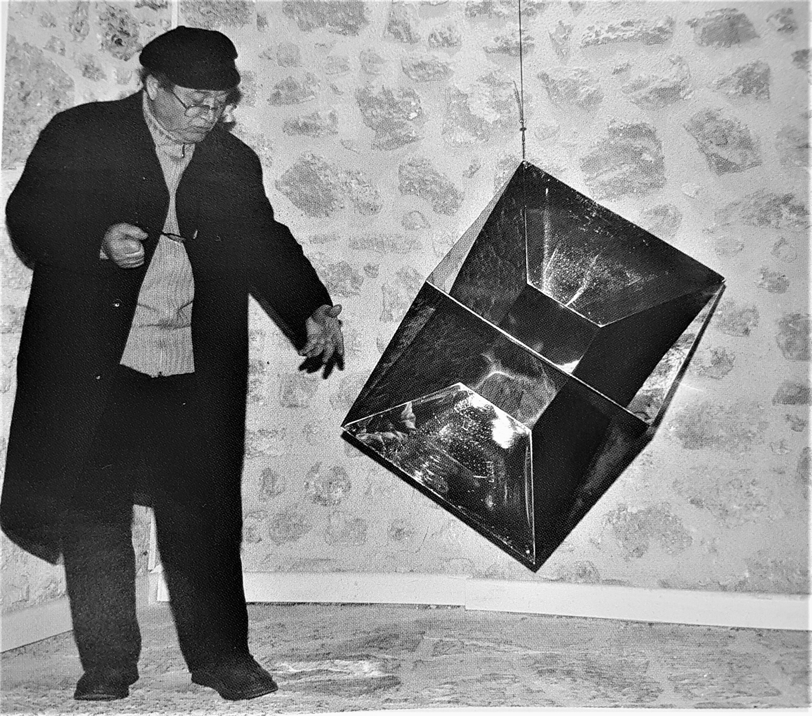
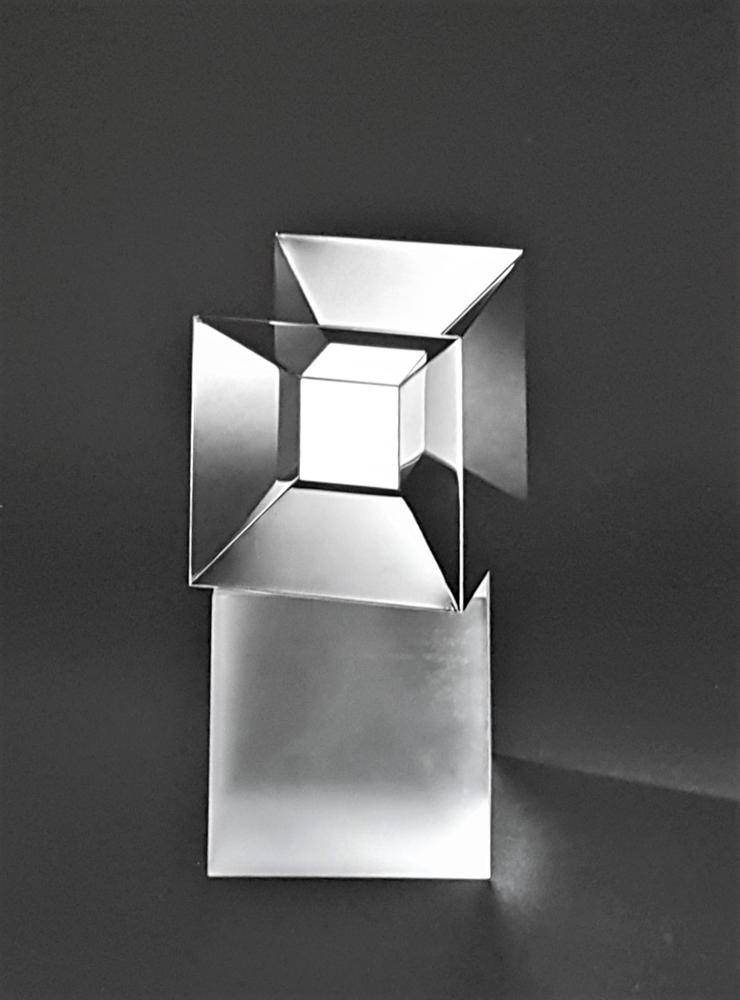
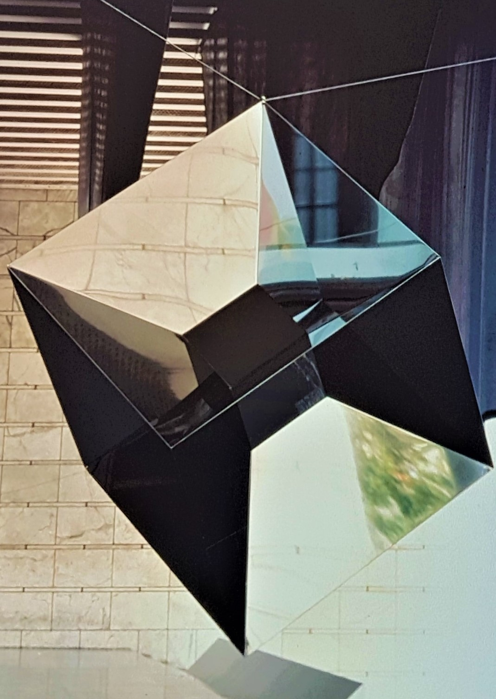
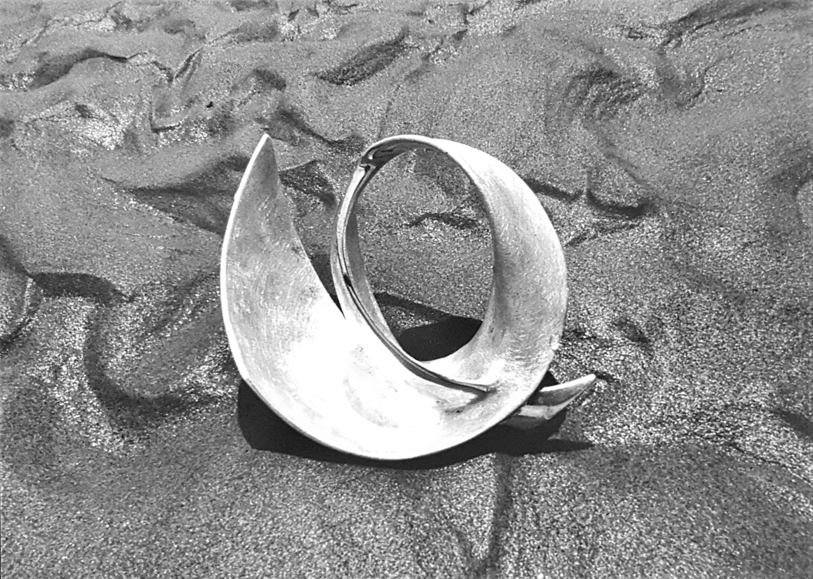

teoria degli universi
microcosmo e macrocosmo (dal 1979)
Le realizzazioni di questo periodo, che vanno da Universo ottaedro a Visione di tre universi, sebbene annoverabili tra le produzioni scultoree pirelliane, sembrano accostarsi, specialmente a causa della loro strutturazione volumetrica e delle loro combinazioni geometriche, molto di più alla compagine architettonica che non a quella scultorea.

Universo ottaedro, 1979, acciaio inox e legno, cm 45x45x22, Collezione Pierelli Universo Icosaedro 2, 1980, acciaio inox, cm 42x48x23, Collezione Pierelli
Universo Icosaedro 2, 1980, acciaio inox, cm 42x48x23, Collezione Pierelli
Visione dell'Icosaedro, 1980, acciaio inox, cm 42x49x23, Collezione Pierelli Icosaedro stellato, 1981, acciaio inox e cemento, cm 30x17x12, Collezione Pierelli
Icosaedro stellato, 1981, acciaio inox e cemento, cm 30x17x12, Collezione Pierelli
Visione dell'Ipercubo, 1980, acciaio inox, cm 52x34x31, Collezione Pierelli Visione del cubo ottaedro, 1980, acciaio inox, cm 35x35x28, Collezione M. Joray
Visione del cubo ottaedro, 1980, acciaio inox, cm 35x35x28, Collezione M. Joray Visione di tre universi, 1981, acciaio inox e cemento, cm 55x50x32, Collezione M. Joray
Visione di tre universi, 1981, acciaio inox e cemento, cm 55x50x32, Collezione M. Joray Visione di tre universi, 1981, acciaio inox e cemento, cm 55x50x32, Collezione M. Joray
Visione di tre universi, 1981, acciaio inox e cemento, cm 55x50x32, Collezione M. Joray
Con queste sculture-architetture, Pierelli vuole condurci ai limiti più remoti del conosciuto esperito, in una dimensione che va al di là della nostra interpretazione e della nostra consueta rappresentazione.
Proprio come un demiurgo, egli plasma l’utopia stessa, mutando la pura astrazione in realtà materica, ed è così che ci viene data, attraverso le sue opere, la possibilità di sognare universi paralleli e spazi alternativi, restando pur sempre “ad occhi aperti”.
«Una delle ragioni della sua freschezza creativa si trova in quel procedere in contemporanea con la fascinazione della scienza […] Lungi dall’apparire, in quanto storicizzato, desueto, mostra segni inequivocabili di stringente attualità nel permeare l’ambiente di sculture generate talvolta da formule e teoremi, che trasformano la luce e la spazialità naturale in miraggi di altri spazi consistenti proiettati e rifratti, di neoplatonica chiarezza»
Nel 1985, partendo dalle equazioni di Albert Einstein ed unendo la veridicità scientifica alla ricerca estetica, Pierelli realizzò T.E.S.T. (Trascinamento di Eventi Spazio Temporali), la replica visibile di un buco nero. Descrivendo nello specifico il moto di cinque particelle nello spazio-tempo, l’opera verrà apprezzata al punto da essere scelta come modello dell' “oscar” per il premio al miglior contributo proposto in astrofisica, il Marcel Grossmann Meeting. Una versione della stessa, realizzata in tubi d’acciaio, venne esposta nei Giardini della quarantaduesima Biennale di Venezia, nel 1986.
 Formula applicata per la realizzazione di T.E.S.T.
Formula applicata per la realizzazione di T.E.S.T.
T.E.S.T., 1985, acciaio inox, cm 25,5x44,5 La scultura T.E.S.T. nei Giardini della Biennale di Venezia in occasione della sua 42sima edizione, Venezia, 1986
La scultura T.E.S.T. nei Giardini della Biennale di Venezia in occasione della sua 42sima edizione, Venezia, 1986 Nodi A, B, C, 1986, bronzo argentato, cm 18,5x15x20, Collezione Pierelli
Nodi A, B, C, 1986, bronzo argentato, cm 18,5x15x20, Collezione PierelliI Nodi appartengono al genere delle sculture topologiche «definite, immobili e non mobili come i pensieri». Lo spazio in cui essi si collocano è fluido, elastico, comprimente, ma al tempo stesso continuo e dalle capacità plasmanti. Lo spazio dei nodi non è quindi uno spazio prospettico, ma del fenomeno, ed il suo assetto morfologico ci permette di visualizzare un atto di trasformazione in perenne divenire e sotto infiniti punti di vista.
In Torri il gesto che lo scultore imprime sulla materia viene catturato dalla costruzione stessa. La luce che si insinua tra le due forme monolitiche dona alla composizione scultorea uno sviluppo quasi strutturale, ed il rigoroso controllo delle misure trasforma il tutto in un concreto teorema, posto al confine tra arte e scienza
 Torri, 1989, alluminio e acciaio inox, cm 300x83x30
Torri, 1989, alluminio e acciaio inox, cm 300x83x30 Interno Ipersferico, 1995, peperino e acciaio, cm 170x60x60 (la foto ritrae l’opera nella sua collocazione originale)
Interno Ipersferico, 1995, peperino e acciaio, cm 170x60x60 (la foto ritrae l’opera nella sua collocazione originale)L’opera Interno Ipersferico venne creata appositamente dall’artista per la Iª Edizione di Incantesimi: scene di Arte e Poesia a Bomarzo, nel 1995. Il percorso espositivo dell’evento si concludeva, infatti, all’interno della panoramica Piazza Nuova dove, in prossimità della balaustra e a strapiombo sul paesaggio naturale, Pierelli decide di collocare la suddetta scultura. In Interno Ipersferico due bassi parallelepipedi di pietra grigia si fronteggiano a distanza ravvicinata, mentre le superfici convesse in acciaio specchiante riflettono la realtà circostante, incamerandola globalmente.
«Lo scultore Attilio Pierelli, ha […] simulato l’apertura di un interno non psichico, ma fisico/intuitivo, che ci consente la visione di un iper-spazio sferico a n. dimensioni: ci fa guardare in uno pseudo/cannocchiale gigante (dimensione uomo) […], puntato sull’infinito dell’orizzonte di una valle dentro il quale ci si dà la visione di un iperspazio per l’effetto infinito del moltiplicarsi del rispecchiamento delle due semisfere in acciaio interne ad esso».
realtà virtuale (anni 80')
In quest'ultima opera, una compatta e massiccia cornice di cemento racchiude al suo interno due lastre in acciaio inox dalla forma convessa, il loro unico punto d’incontro avviene nell’esatto centro di entrambe e genera la creazione di due coni di luce sfaccettata. Non c’è possibilità di entrata o uscita dalla scultura se non attraverso le geometrie illusorie di questi coni: Coni di luce. La capacità dell’opera di creare razionalmente strutture spaziali irreali, spinse Pierelli ad esporla all’importante collettiva romana Forme per il cemento che ebbe luogo nel 1988
 Coni di Luce, 1981, acciaio inox e cemento, cm 45,5x25,7x23, Roma, Collezione
Coni di Luce, 1981, acciaio inox e cemento, cm 45,5x25,7x23, Roma, Collezione Coni di Luce, 1988, acciaio inox e cemento, 3x1,25x1,40 m
Coni di Luce, 1988, acciaio inox e cemento, 3x1,25x1,40 m Anello di Moebius, 1988, acciaio inox, cm 76x44,5, Collezione Pierelli
Anello di Moebius, 1988, acciaio inox, cm 76x44,5, Collezione Pierelli